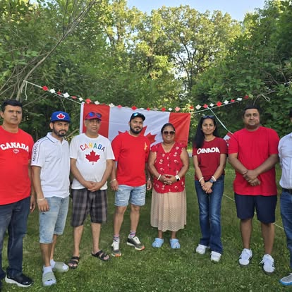
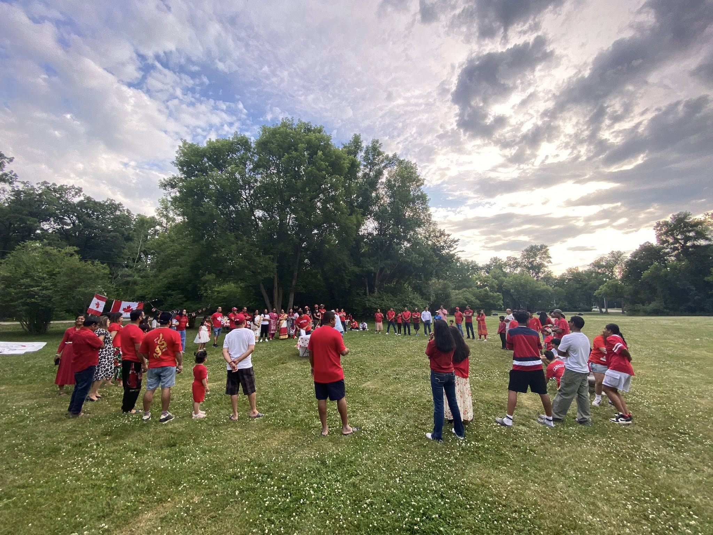
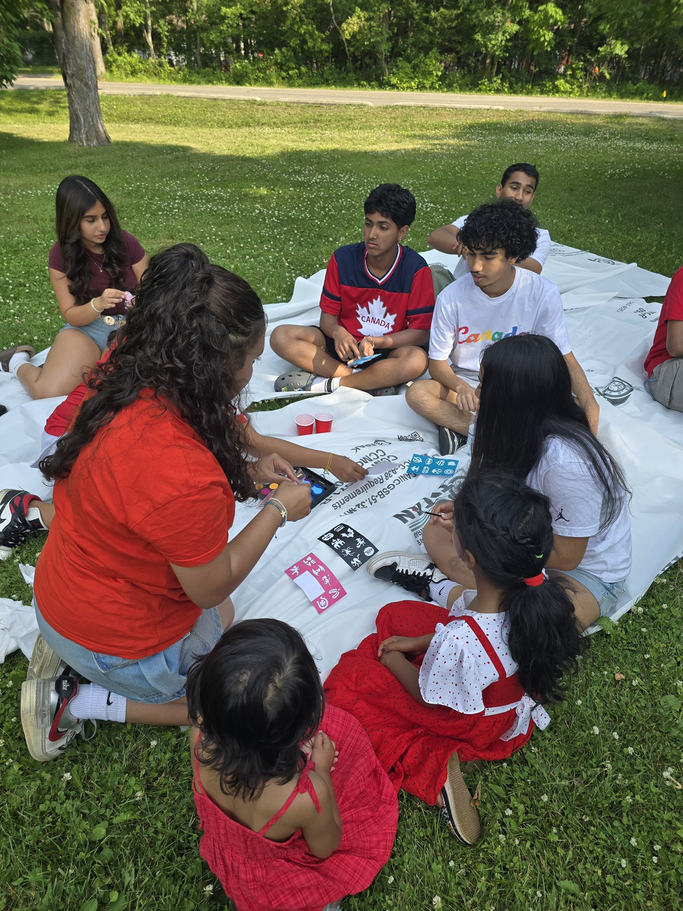
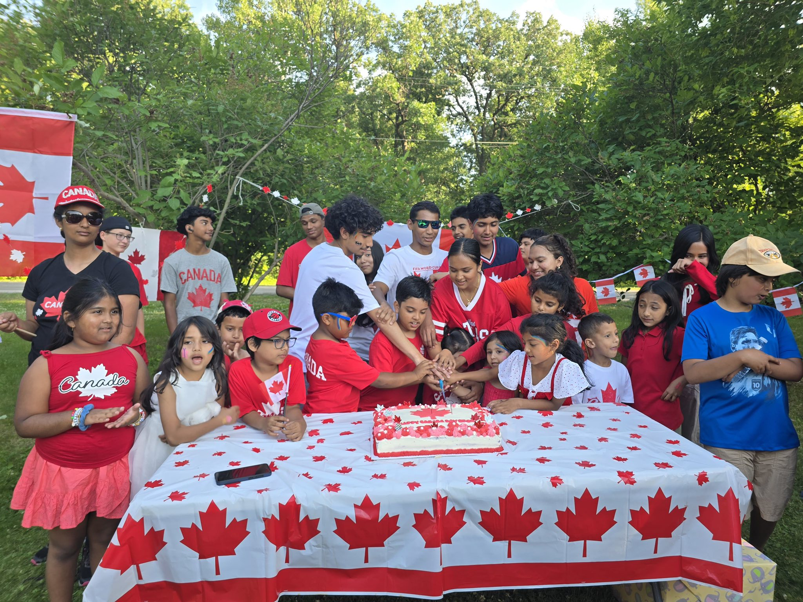
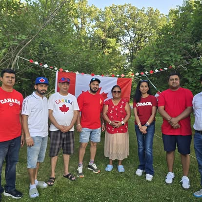
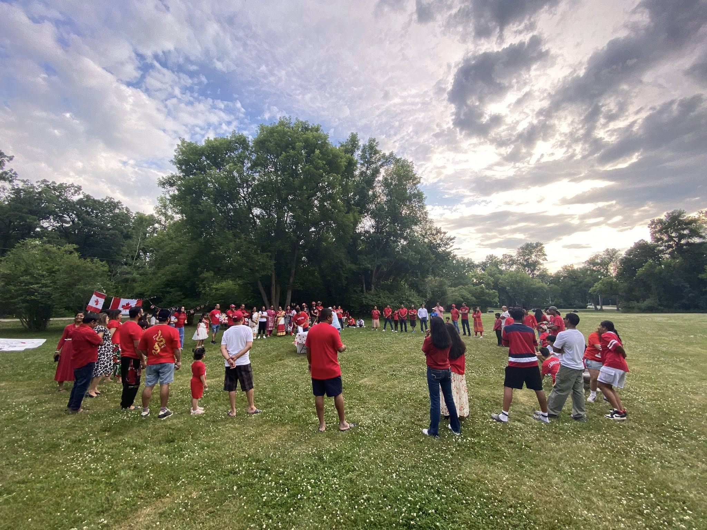
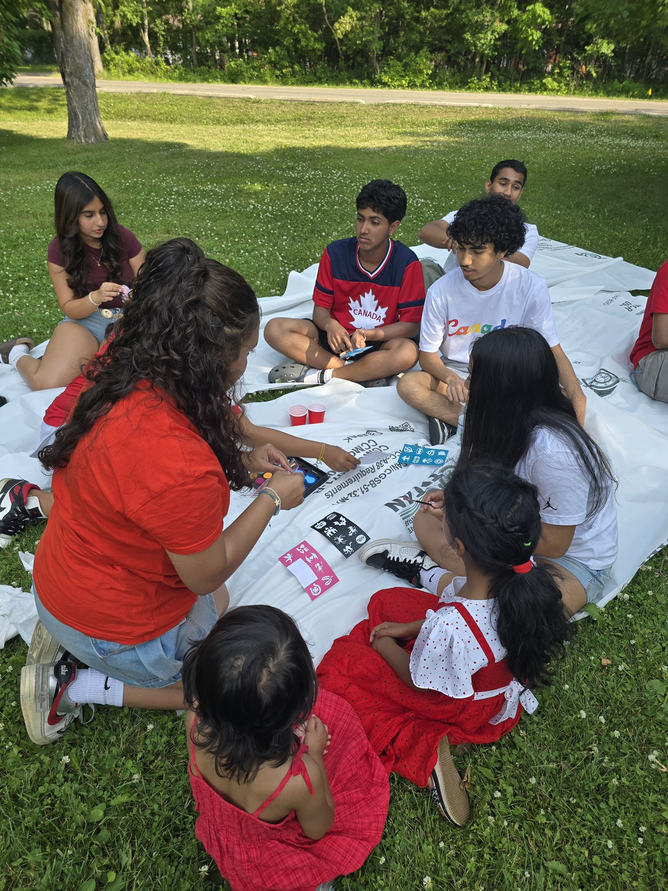
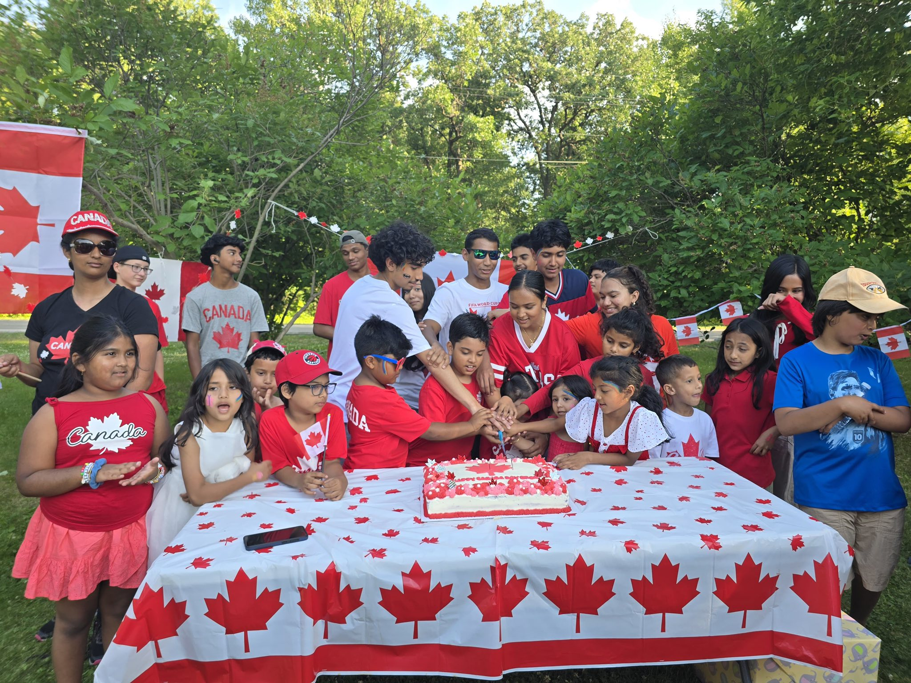

Canada Day 2025 with SSCA was nothing short of magical. It was one of those days where everything just clicked — the weather, the energy, the people, the pride. The sky was bright blue, scattered with just the right amount of clouds to give us some shade between all the sunshine and celebration. Families started arriving early, dressed in red and white, waving little Canadian flags, and greeting each other with smiles that felt like home.
As always, SSCA didn’t just “attend” Canada Day — we celebrated it the way we know best: with heart, culture, and full-on community spirit. Our area at the event quickly turned into a hub of activity. The Canadian flag flew proudly beside colorful SSCA banners, and the aroma of desi spices mixing with the summer air drew curious visitors from all corners of the park.
Like any proper SSCA event, we cooked our own food — right there on the spot. Giant pots bubbled with biryani and chicken curry, parathas were flipped hot off the tawa, and plates of samosas and sweets circulated non-stop. It was a sight to see — aunties organizing kitchen crews like generals, uncles debating the best spice ratio, and kids sneaking bites before the food was even ready. It was truly a community kitchen in action — and a delicious one at that.
But it wasn’t just about the food (although the food was amazing). The real heart of the day was in the celebration itself. We had an open mic where kids and adults alike sang songs — some sang O Canada, others sang Tagore and Lata Mangeshkar classics. There were performances of traditional Bengali and Hindi dances, all dressed in stunning cultural outfits that turned heads and made everyone want to join in. The applause echoed through the park.
Then came the games and activities, which were as fun for the adults as they were for the kids. There was face painting, flag coloring, and a Canada trivia game where kids actually beat the grown-ups (which, of course, they never let us forget). We had sack races, a watermelon-eating contest, and even a mini parade with drums and dhols that had random passersby dancing with us. It was that kind of day — joyful, spontaneous, full of life.
And the gifts! SSCA had prepared small tokens for all the kids who participated — flags, books, bubbles, and chocolates — and raffle prizes for the adults, including gift cards and a surprise “Best Dancer” trophy that went to an uncle who hadn't danced since the 90s but suddenly became the star of the show.
Canada Day 2025 reminded us that being Canadian doesn’t mean leaving your culture behind — it means bringing it with you and sharing it proudly. And SSCA did exactly that. Here’s to community, culture, and Canada — and here’s to doing it even bigger next year.